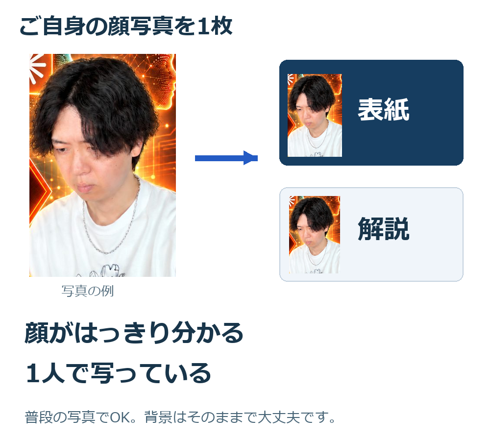

台本と写真から、
自分らしい特典を作る。
本人の考え・口調が伝わる特典を。
まずは、使う端末を選んでください。
スマホで使う
 ChatGPT
ChatGPT
アプリへの貼り付けで開始できます
パソコンで始める
動画を止めながら、一緒に進められます。
ZIPを保存して、展開する
WindowsはZIPを右クリックし、「すべて展開」。
MacはZIPをダブルクリック。すでにフォルダーになっていれば、そのまま開きます。展開後は、次の2つを確認します。
「最初に読む.md」
「bonus-production」フォルダーCodexかClaude Codeへ読み込ませる
文章をコピー→AIへ貼り付け→場所を追加して送信先に下の文章をコピーし、AIの入力欄へ貼り付けます。まだ送信せず、続いてフォルダーの場所を末尾へ追加します。
フォルダーの場所をコピーする方法
Windows：展開したフォルダーを開き、上の場所の欄を右クリック。「アドレスをテキストとしてコピー」を選びます。
Mac：展開したフォルダーを開き、「表示」→「パスバーを表示」。下部のフォルダー名を右クリックし、「パス名をコピー」を選びます。
コピーした場所は、AIの入力欄の「フォルダーの場所：」の下へ貼り付けます。引用符付きでもそのままでOKです。
Codex・Claude Codeの準備
どちらかを使える状態にしてから進めます。初回の導入・ログインは各公式案内を確認してください。
文章と場所がそろったら送信します。AIが導入先と認識結果を返したら、次へ。認識されない場合は「スキルが使えるか確認して」と送ってください。
台本と顔写真を渡す
下の依頼文を貼り付けてから、動画の台本と顔写真を追加します。

AIの質問に答えて、制作を始める
聞かれる内容は、下の「最初に聞かれること」にまとめています。完成後は、特典を開いて中身を確認しましょう。
スマホで始める
ChatGPTの同じチャットで進めます。
プロンプトをコピーする
このページのボタンで、制作ルールの全文をまとめてコピーできます。
ChatGPTへ貼り付けて送る
新しいチャットへ貼り付けて送信します。
ChatGPTを開く台本と顔写真を送る
動画の台本を貼り付け、ご自身の顔写真を添付します。下の依頼文も送ってください。
質問に答えて、そのまま制作へ
画像の生成で返答が終わったら、「続けて」と送ると残りの工程へ進めます。
画像・ファイルを作れる範囲は、お使いのChatGPT環境によって異なります。
プロンプト全文を見る・コピーできないとき
下の欄を長押しして「すべて選択」→「コピー」してください。
TXTファイルで保存する最初に聞かれること
AIが、不足している情報だけ質問します。
「未定」「なし」と答えてもOKです。
- 活動名
- 「○○式」「○○流」に使う名前。
- 本人写真
- 顔がはっきり分かる、ご本人1人の写真。普段の写真でOKです。
- 最後の案内
- LINE・フォロー・案内なし。URLと案内内容も。
- 参考・実物
- 参考特典、完成物、操作スクショがあれば渡す。
- 考え・経験
- 台本に理由が足りないときだけ、具体的に質問。
解説動画は後から追加できます。必要な操作画面は、AIが具体的に案内します。
回答する文章の例
参考になる特典
いそっちさんの2例を開けます。
途中で止まったら
何をAIへ渡せばいいか分からない
最初は動画の台本と、ご自身の顔写真1枚で始められます。ほかに必要なことはAIが質問します。
「ファイルが見つからない」と言われた
PCでは展開後のフォルダーの場所を送り直してください。スマホでは写真・台本を同じチャットへ添付し直します。
画像が1枚出て、止まってしまった
「続けて。特典本体と撮影台本まで仕上げて」と送ってください。画像生成が使えない場合は、必要な素材と残る作業が案内されます。